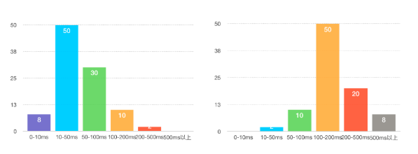
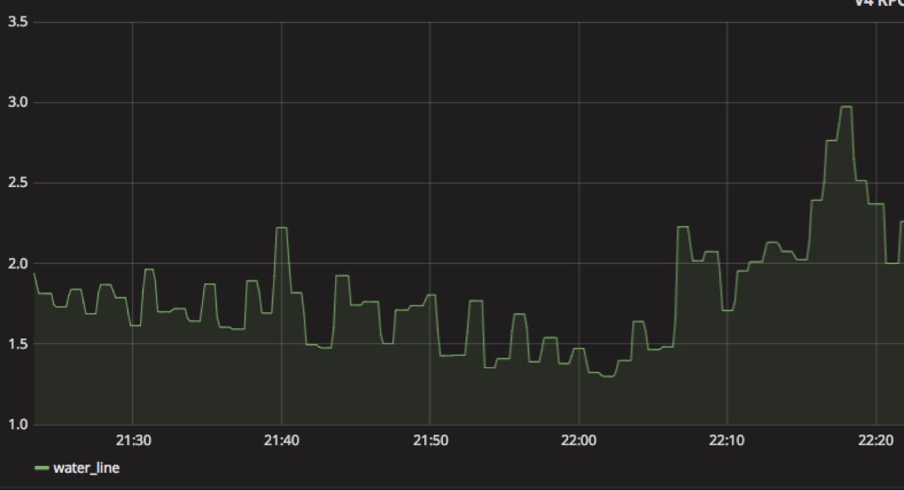
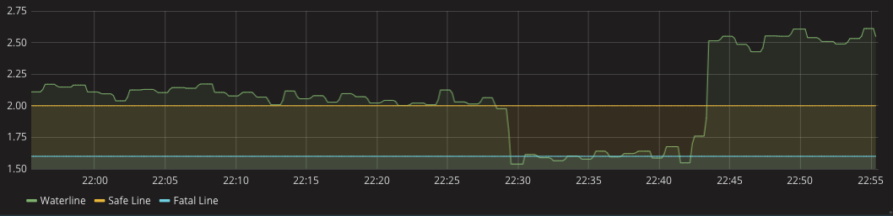

- 00 开篇词 微服务，从放弃到入门.md.html
- 01 到底什么是微服务？.md.html
- 02 从单体应用走向服务化.md.html
- 03 初探微服务架构.md.html
- 04 如何发布和引用服务？.md.html
- 05 如何注册和发现服务？.md.html
- 06 如何实现RPC远程服务调用？.md.html
- 07 如何监控微服务调用？.md.html
- 08 如何追踪微服务调用？.md.html
- 09 微服务治理的手段有哪些？.md.html
- 10 Dubbo框架里的微服务组件.md.html
- 11 服务发布和引用的实践.md.html
- 12 如何将注册中心落地？.md.html
- 13 开源服务注册中心如何选型？.md.html
- 14 开源RPC框架如何选型？.md.html
- 15 如何搭建一个可靠的监控系统？.md.html
- 16 如何搭建一套适合你的服务追踪系统？.md.html
- 17 如何识别服务节点是否存活？.md.html
- 18 如何使用负载均衡算法？.md.html
- 19 如何使用服务路由？.md.html
- 20 服务端出现故障时该如何应对？.md.html
- 21 服务调用失败时有哪些处理手段？.md.html
- 22 如何管理服务配置？.md.html
- 23 如何搭建微服务治理平台？.md.html
- 24 微服务架构该如何落地？.md.html
- 25 微服务为什么要容器化？.md.html
- 26 微服务容器化运维：镜像仓库和资源调度.md.html
- 27 微服务容器化运维：容器调度和服务编排.md.html
- 28 微服务容器化运维：微博容器运维平台DCP.md.html
- 29 微服务如何实现DevOps？.md.html
- 30 如何做好微服务容量规划？.md.html
- 31 微服务多机房部署实践.md.html
- 32 微服务混合云部署实践.md.html
- 33 下一代微服务架构Service Mesh.md.html
- 34 Istio：Service Mesh的代表产品.md.html
- 35 微博Service Mesh实践之路（上）.md.html
- 36 微博Service Mesh实践之路（下）.md.html
- 微博技术解密（上） 微博信息流是如何实现的？.md.html
- 微博技术解密（下）微博存储的那些事儿.md.html
- 结束语 微服务，从入门到精通.md.html
- 阿忠伯的特别放送 答疑解惑01.md.html
- 阿忠伯的特别放送 答疑解惑02.md.html
- 捐赠
30 如何做好微服务容量规划？
专栏上一期我给你讲解了单体应用拆分为微服务后带来的开发、测试和运维复杂度的提升，可以通过DevOps实现CI/CD流程的自动化来解决。除此之外，单体应用拆分为微服务还带来另外一个问题，也就是拆分出来后的多个微服务容量如何规划的问题。在单体应用时，只需要针对这个单体应用的访问量和实际接口性能来决定要不要给单体应用扩容，而拆分为众多的微服务之后，需要考虑每个服务的容量规划，它的复杂度主要来自下面几个方面。
服务数量众多，纯靠人肉运维难以管理，比如微博Feed业务仅仅RPC服务就有将近40个。
服务的接口表现差异巨大，有的接口属于访问量比较大，但接口响应时间比较短的轻接口；有的接口属于访问量比较小，但接口响应时间比较长的重接口。比如微博Feed业务中计数接口的平均耗时只有2～3ms，而微博Feed业务中Feed接口的平均耗时要超过200ms。
服务部署的集群规模大小不同，需要扩容的机器数量差异很大。比如微博的AB测试服务集群只有大约20台机器，扩容只需要几台机器就满足了；而Feed服务则有上千台机器，往往扩容需要上百台机器。
服务之间还存在依赖关系，在服务扩容的时候，还需要考虑依赖服务的容量是否足够。比如微博Feed业务扩容还依赖用户关系服务和Card服务，扩容时还需要考虑依赖的用户关系服务和Card服务容量是否有问题。
由此可见，单体应用拆分为微服务后，微服务的容量规划难度一下子增加了很多，再靠传统的人肉运维模式显然难以为继。延续上期DevOps的话题，其实微服务的容量规划也是广义DevOps要解决的问题之一，那么DevOps是如何解决的呢？答案就是容量规划系统，下面我就来聊聊容量规划系统该如何实现。
容量规划系统的作用是根据各个微服务部署集群的最大容量和线上实际运行的负荷，来决定各个微服务是否需要弹性扩缩容，以及需要扩缩容多少台机器。
可见，容量规划系统实施的关键在于两点：一是如何评估集群的最大容量和线上实际运行的负荷，也就是如何做好容量评估；二是如何确定弹性扩缩容的时机以及机器数，也就是如何做好调度决策。下面我们分别来看这两个关键点，逐个击破。
容量评估
一般集群的容量评估都是通过线上实际压测来确定的，那么该如何进行线上压测呢？都需要注意哪些关键点呢？
1.选择合适的压测指标
一般在选取压测指标时，主要有两类：一类是系统类指标，比如机器的CPU使用率、内存占用量、磁盘I/O使用率以及网卡带宽等；一类是服务类指标，比如接口响应的平均耗时、P999耗时、错误率。但这些指标在实际压测时，都会存在一些问题。系统类指标比如CPU使用率并不能直接反映出服务压测时的健康状况，有时候CPU使用率不高的时候，接口耗时也可能有问题；而有时候CPU使用率较高时，接口耗时表现依然很正常。而服务类的指标比如接口响应的平均耗时也不能精确的反映服务的实际健康状态，一个最典型的场景就是在压测时，已经出现一定比例的慢请求，而在平均耗时上并不能看出有多大变化，这时候实际服务已经处于不健康的状态了，应该停止压测了。
根据我的经验，在压测时，除了观察以上这些指标以外，还可以观察接口的慢速比，也就是接口响应时间高于某个阈值的比例。比如微博在进行Feed接口压测时，选择的压测指标就是Feed接口响应时间大于1s的比例，压测的终止条件是Feed接口响应时间大于1s的比例超过1%。我的主要考虑是，当99%以上接口请求都在1s以内返回时，反馈到用户的直接使用感受是不容易感知到Feed刷新慢，反之则不然。对于大部分在线服务来说，接口慢速比不超过1%都是服务质量保证的底线了，因此可以作为一个通用的压测指标。
2.压测获取单机的最大容量
集群的最大容量就是单机的最大容量 × 集群内的机器数量，所以要获得集群的最大容量，就必须获得单机的最大容量。通常有两种方式来获取单机的最大容量，一种是单机压测，一种是集群压测。
单机压测一般有两种方式，一种是通过日志回放等手段，模拟线上流量来对单机进行压测；一种是通过TCP-Copy的方式，把线上机器的流量拷贝过来对单机进行压测。
集群压测是对整个集群进行压测，以获取单机的最大容量。一般做法是通过不断把线上集群的节点摘除，以减少机器数的方式，来增加线上节点单机的流量，从而达到压测的目的。
从我的经验来看，采用集群压测的方式要更合理一些，因为它是完全使用线上真实流量进行压测，获取的单机最大容量数值更精确。如果采用单机压测，通常为了避免产生“脏数据”，往往需要去掉一些上行的修改请求，所以不能完全模拟线上真实情况。不过使用集群压测的方式也有一个缺点，就是压测的时候会对线上用户的实际请求产生影响，如果压测出问题了，会直接影响线上服务，所以一般会选择在业务低峰期进行压测，最大限度减少对线上服务造成的影响。还有一点是，通常会在工作日进行压测，以便出现问题时，也能人为快速介入。
假设我们采用集群压测，不断地缩减线上节点的数量，并观察服务的慢速比指标，当慢速比达到1%时，就停止压测，这个时候就可以计算单机的最大容量了，一般做法是用压测停止时刻的单机平均QPS作为单机的最大容量。但是，采用QPS就真的合理吗？实际上并非如此，这是因为QPS并不能准确衡量单机的消耗，就像下面这两张图所展示的，左图的请求响应时间主要集中在100ms以下，没有超过500ms的；而右图的请求响应时间主要集中在50ms以上，没有低于10ms的。这两种请求分布对单机消耗差异很大，显然右边要对单机的消耗更大一些。在单机QPS都是100的情况下，左边的单机还能继续加大QPS，而右边的单机已经出现超过500ms以上的慢请求了。

所以，一个更合理的计算单机容量的方式是采用区间加权来计算，也就是把请求按照响应时间分成多个区间，每个区间分别赋予不同的权重，响应时间越长权重越高，比如0～10ms区间的权重是1，10～50ms区间的权重是2，50～100ms区间的权重是4，100～200ms区间的权重是8，200～500ms区间的权重是16，500ms以上的权重是32，那么上面两张图所描述的情况的单机容量分别是8×1+50×2+30×4+10×8+2×16=340和2×2+10×4+50×8+20×16+8×32=1020。因此单机的最大容量，也就是压测停止时刻采用区间加权方式计算得出。
3.实时获取集群的运行负荷
通过压测能够获取到单机的最大容量，再乘以集群内的机器数量就是集群的最大容量了，下一步获取集群实际运行的负荷，就可以判断集群是否需要扩容了。跟刚才计算单机容量的方式类似，集群的运行负荷也需要通过采用区间加权的方式来计算，但是因为集群的规模可能很大，超过上千台机器，显然通过计算每台单机运行的负荷再加在一起的方式效率不高。我在线上实际使用的方法是统计每台单机在不同耗时区间内的请求数，推送到集中处理的地方进行聚合，将同一个集群内的单机位于不同耗时区间内的请求进行汇总，就得到整个集群的请求在不同耗时区间内的分布了，再利用区间加权的方式就可以计算整个集群的运行负荷。
调度决策
在容量评估阶段，你可以获取集群的最大容量和集群的实际运行负荷，有了这两个数据后该如何做调度策略呢？我在实际线上业务使用的是水位线来进行调度决策。就像水库的水位线一样，要实时观测水库的蓄水量，如果因为长时间降水导致水库蓄水量超过警戒水位线就需要开闸泄洪；如果长时间干旱降水量太少，就需要关闸蓄水，以保持水库中的蓄水量始终在一个合理的水位线上。这样的话，任意时刻的水位线就是集群的最大容量除以集群的实际运行负荷，可以实时监控集群的水位线。

在调度决策时候，就可以根据水位线来做决定。你可以看到下面图中划分了两条线，一条是安全线，一条是致命线。当集群的水位线位于致命线以下时，就需要立即扩容，在扩容一定数量的机器后，水位线回到安全线以上并保持一段时间后，就可以进行缩容了。

那具体在执行扩缩容时，机器数量该如何决定呢？
1.扩容
在决定扩多少机器时，一般有两种方式，一种是按数量，一种是按比例。因为不同的集群内机器数量差别可能很大，所以一般采取按比例的方式，举个例子比如每一次扩容都增加30%的机器数量，再看扩容后的水位线是否处于致命线以上了。
2.缩容
在扩容完成后，集群的水位线保持在安全线以上一段时间后，就需要缩容，以节省机器成本。可以根据实际业务特点来决定多久后可以缩容，比如微博的业务一般突发流量维持在1个小时以内，因此集群的水位线在安全线以上超过1个小时之后，就可以缩容。而在缩容时也不是一次把所有扩容的机器都缩掉，而是采用逐步缩容的方式，每隔5分钟判断一次集群的水位线是否还在致命线以上，然后按照10%、30%、50%、100%的比例进行缩容，这样可以避免缩容太快导致集群水位线又降到致命线以下又得再扩容机器。
在实际根据水位线决定是否扩缩容时还需要防止网络抖动等原因造成的水位线瞬间抖动，这个时候集群的运行负荷会突然变大，导致水位线异常，此时如果加以处理的话就会触发扩容，而实际上并不需要扩容。为了防止瞬间抖动，可以每分钟采集一次系统的水位线，一共采集5个点，只有5个点里有3个点满足扩容条件，才真正触发扩容。
总结
今天我从两个方面具体给你讲解了微服务如何做好容量规划的问题，即做好容量评估和调度决策。容量评估方面，首先要通过压测获取集群的最大容量，并实时采集服务调用的数据以获取集群的实时运行负荷，这样就可以获取集群的实时水位线。而调度决策方面，主要是通过水位线与致命线和安全线对比来决定什么时候该扩缩容。而扩缩容的数量也是有讲究的，扩容的机器数一般按照集群机器数量的比例来，而缩容一般采取逐步缩容的方式以免缩容太快导致反复扩容。
在单体应用拆分为多个微服务后，如果不做好容量规划是很危险的事情，尤其是在微服务的调用量出现突发峰值流量时，再靠人为判断决策扩缩容往往为时已晚。根据我在微博的实践，也证明了通过容量规划实现微服务的自动扩缩容才是解决这个问题的最佳途径。
思考题
在计算集群的水位线时，经常会遇到集群内有些单机问题导致整个集群的实时运行负荷偏大，对此你有什么解决方案吗？
欢迎你在留言区写下你的思考，与我一起讨论。
© 2019 - 2023 Liangliang Lee. Powered by gin and hexo-theme-book.